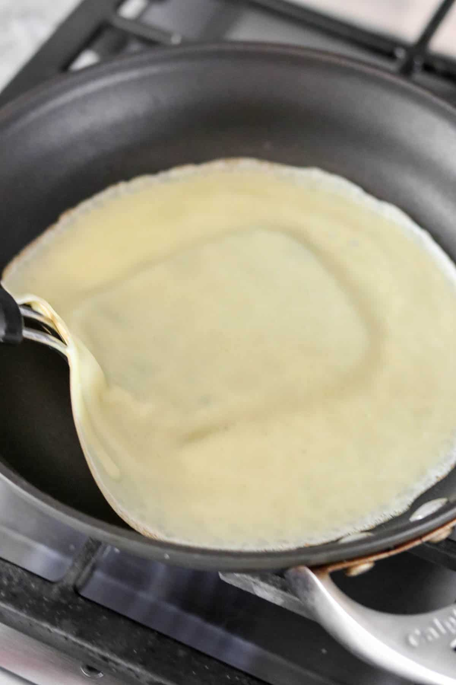
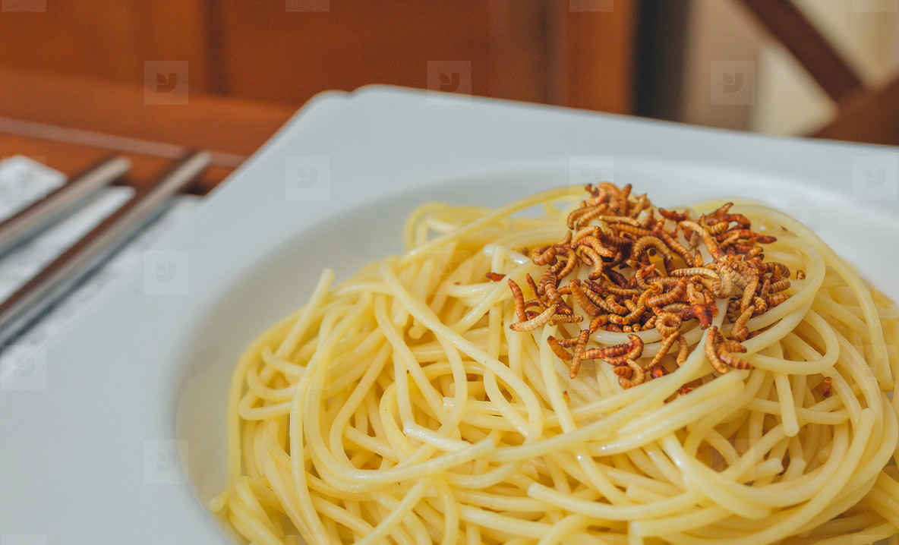
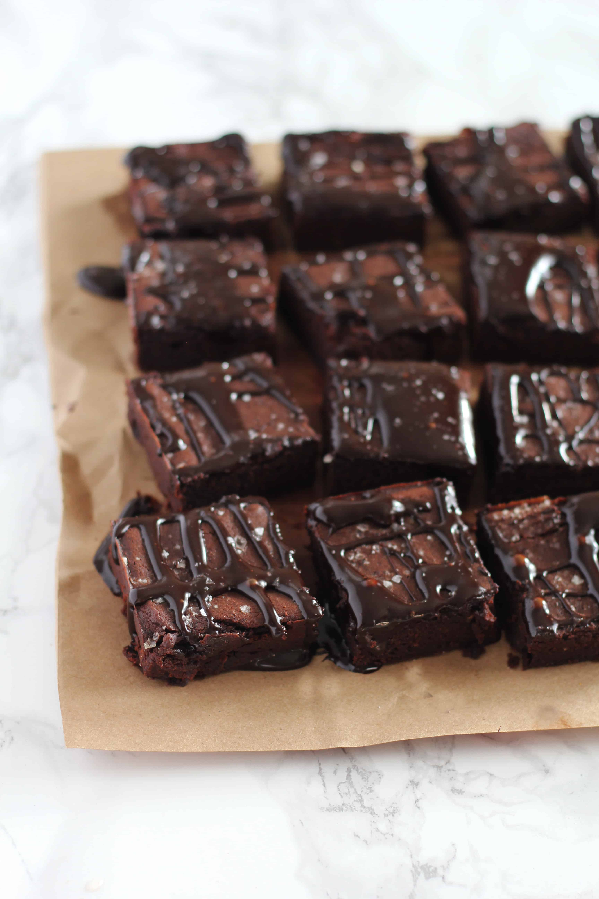

Swedish Pancakes

Origin, Source, Category
Sweden, Kristi Link, Breakfast
Photo Gallery
Recipe Ingredients
- Butter
- Sugar
- Eggs
- Vanilla
- Milk
- Water
- Salt
- Flour
Recipe Steps
- Combine all ingredients in a blender and blend until completely smooth.Transfer to the refrigerator to rest for at least 2 hours or up to 2 days.
- Preheat the oven to 200 degrees if you plan to eat the pannkakor right away. Heat a 10 inch nonstick skillet over medium heat. Stir the batter briefly to recombine. Brush skillet with melted butter. Pick the skillet up off of the burner and quickly add ¼ cup of batter. Immediately begin swirling the batter around the skillet so that it coats the bottom of the pan. Continue swirling until the batter is just set. Return skillet to the burner. Cook until the pancake is golden brown in spots on the bottom, about 30 seconds. Use a thin spatula to loosen the pancake, flip it over continue to cook on the other side for about 30 seconds. Transfer to a plate. Cover with foil and transfer to oven to keep warm and repeat with remaining batter, wiping out skillet in between pancakes with paper towel as needed.
- Serve with lingonberry jam and butter (see note below) or other desired toppings and/or fillings. See notes below for more information about making ahead of time and storing in the refrigerator or freezer.
Spaghetti

Origin, Source, Category
Italian, Luna Link, Main Dish
Photo Gallery
Recipe Ingredients
- Dry spaghetti noodles
- Pasta Sauce
- Cheese
Recipe Steps
- In a pan, add the pasta sauce and just enough water to cover the bottom of the pan. Bring the mixture to a boil.
- Add the spaghetti noodles to the pan and cook according to the packaging instructions
- Once the noodles are cooked, plate on a pan and add cheese on top
Fudgy Date Brownies
Origin, Source, Category
American, Baker Link, Dessert
Photo Gallery


Recipe Ingredients
- 1 1/2 cups pitted dates
- 1 cup hot water
- 3/4 cup unsalted butter softened(1 1/2 sticks)
- 2 cold eggs
- 1 teaspoon vanilla extract
- 3/4 cup cocoa powder
- 1/2 cup plus 2 tablesppons all purpose flour
- Sea salt for sprinkling
Recipe Steps
- Grease or line an 8x8 baking pan. Preheat oven to 350F.
- In a food processor or blender, puree the dates and hot water until smooth. Measure out a cup of the paste (mine yielded exactly a cup,) and transfer to a large bowl with the butter.
- Cream the butter and date paste until smooth
- Add the eggs, one at a time and vanilla extract, mixing until fluffy and smooth.
- Add the cocoa and flour, and mix on low until well combined.
- Spread batter into prepared pan, smoothing with the back of a spoon. Sprinkle a little sea salt on top.
- Bake for 18-23 minutes, or until edges are set. Allow pan to cool while you prepare the glaze.
- Whisk together the butter, honey and cocoa powder. Add vanilla and whisk until smooth. If the glaze seems a little runny- add a dash more of cocoa powder. If it seems too thick- you can add a splash of milk. Drizzle over the brownies and sprinkle with more sea salt.
- Brownies will last for up to a week in a sealed container in the fridge.